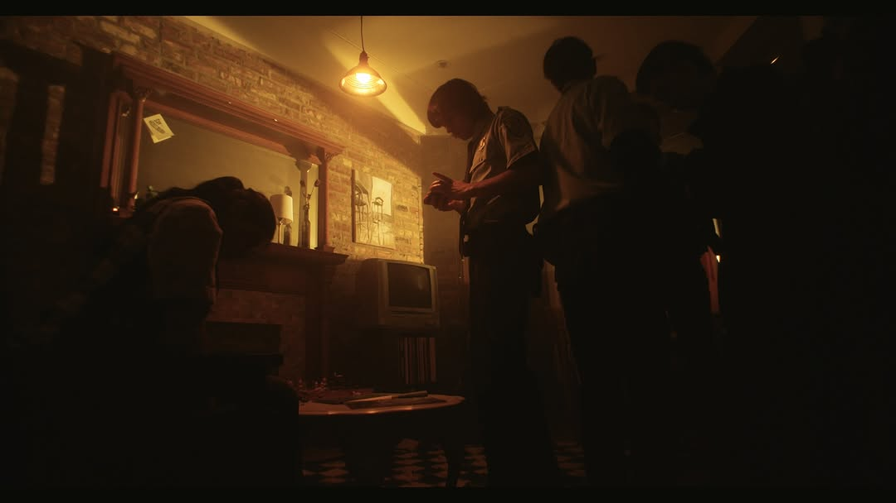
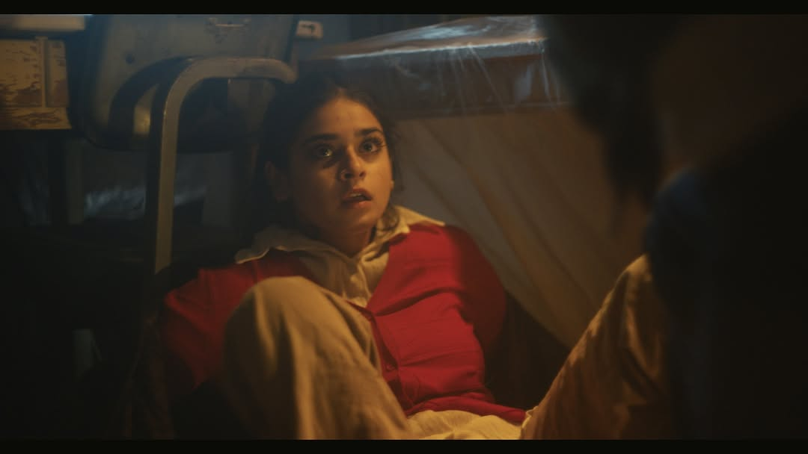
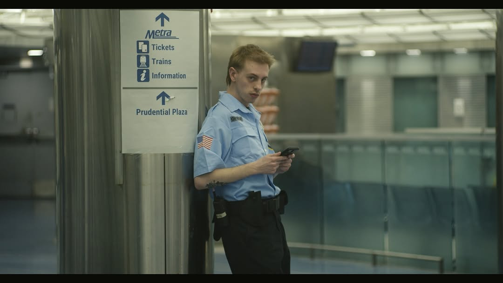
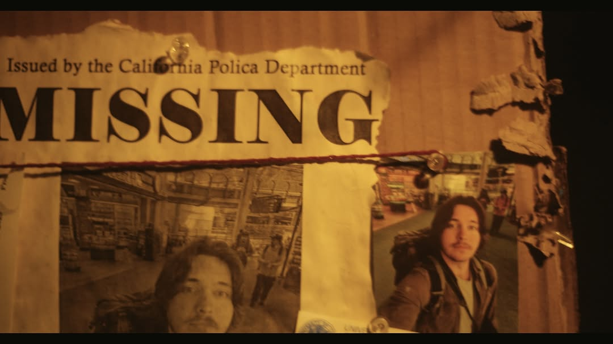

Belly of the Beast (Work in Progress)




On-set VFX Supervision/Coordination as a part of a small team. Currently in early stages of post-production, where I will also serve as a compositor on the project.
← Back to Compositing